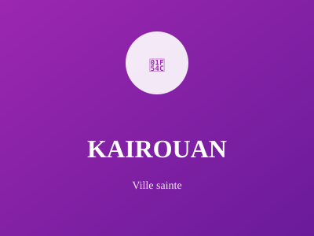

Quatrième ville sainte de l'Islam

Quatrième ville sainte de l'Islam, Kairouan est un centre religieux majeur. La ville est réputée pour son artisanat traditionnel, notamment les tapis et les tissus de haute qualité mondialement reconnus.